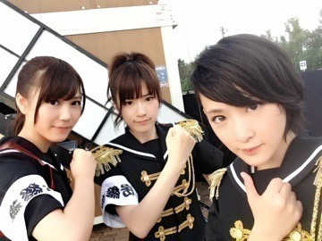

| 2013/09 15 Sun | ヽ(・∀・)ﾉ今日は 沢山寝ましたヽ(・ ∀・)ﾉ |
どうも生駒ですヽ(・∀・)ﾉ
写真フォルダ見てたら自分撮りより二次元の皆様の写真の方が圧倒的に多くてアイドル的にもっと自分を撮りなさいと思った生駒です。
皆さんいかがお過ごしですか？
雨大丈夫でしたか？
生駒は引きこもってましたので大丈夫です。
皆さん質問答えて下さってありがとうございますヽ(・∀・)ﾉ
今年中にやりたい事人それぞれありますね〜
中でも受験生は受験勉強だねっ！
志望校合格に向けて頑張るっていう方が結構いらっしゃいました！
生駒も高校三年生！一緒に頑張りましょう！
あと彼氏彼女つくる！という方もいらっしゃいました！
今年のクリスマスが楽しみですねっ！
あと生駒ちゃんに会うことと言って下さる方も！
生駒はいつも待ってまーす！ヽ(・∀・)ﾉ

ずーさんとひなちゃん！いかつい感じにしてみたよヽ(・∀・)ﾉ
実はぬ〜
あっ
実はね〜
おでこをヘアアイロンでやけどしてしまったのよ〜(ヾﾉ･∀･`)
新しく買ったばかりのやつでね。
順調に治ってますが！
皆さんも怪我にはご注意をっ！
なんかこういきなりぽっとひとりになると何をすればよいのか分からなくなるヽ(・∀・)ﾉ
あっ。
普通に漫画読んでおりました

じゃありんご食べてお風呂入りますか〜
質問！
皆さんは夕日を見るの好きですか？
生駒は秋の夕暮れが好きなんです。
ぱっと顔を上げて雲が夕日に染まっているのをみたら心が綺麗になる様な気がするんです！
よろしくお願いします！ヽ(・∀・)ﾉ
へばなっ！
コメント(645)
2013/09/15 21:06